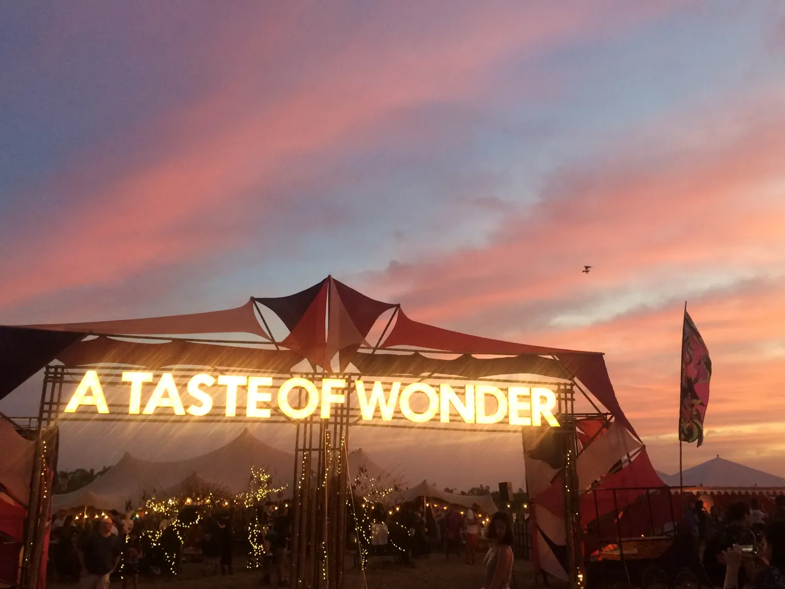
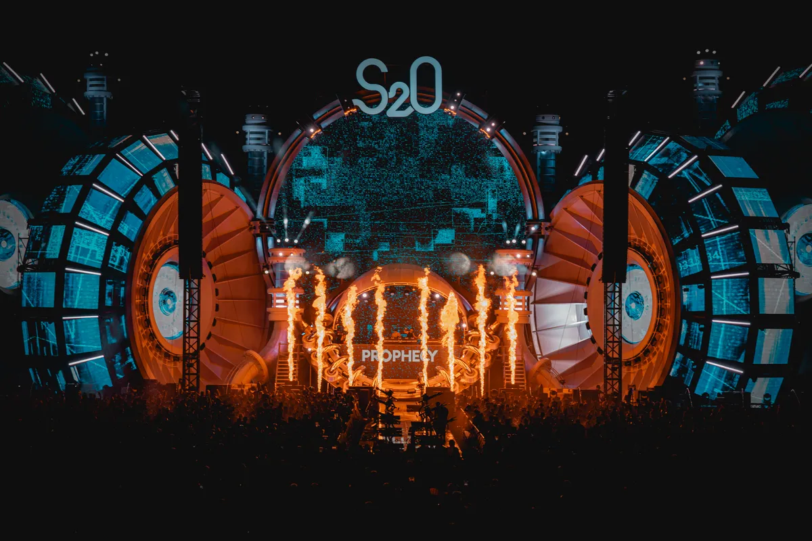
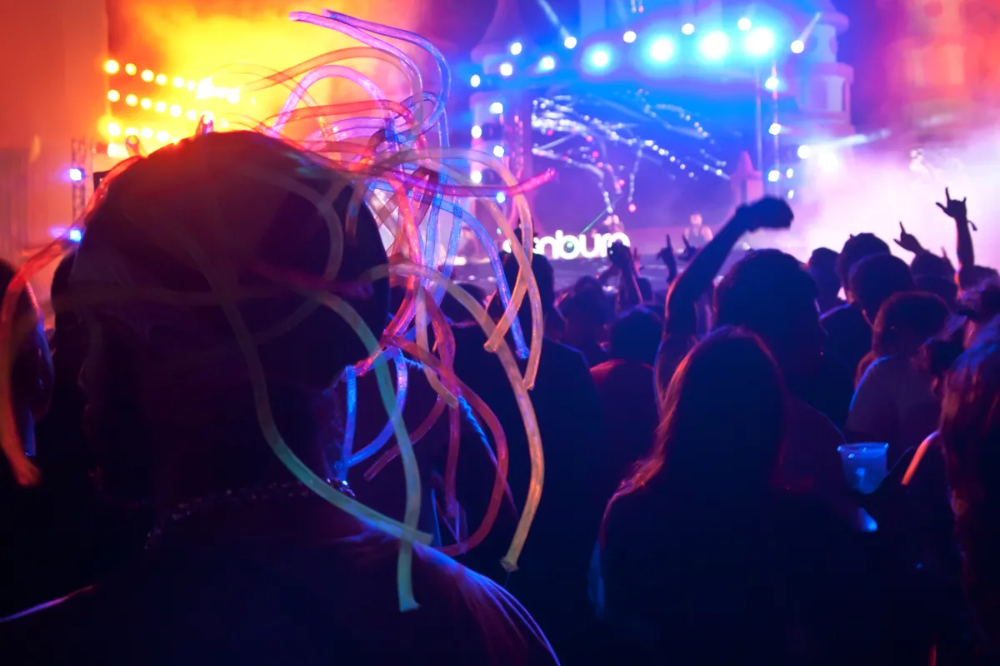
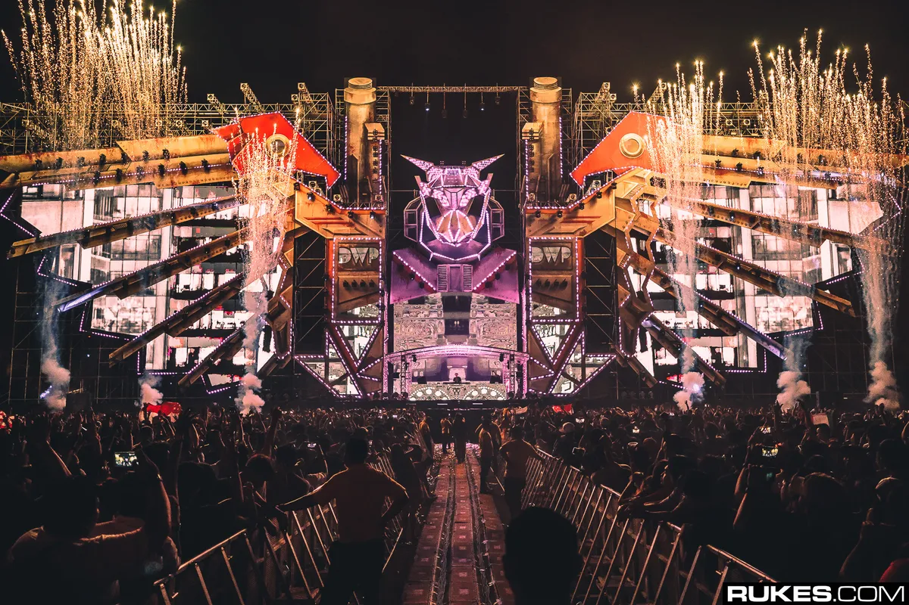
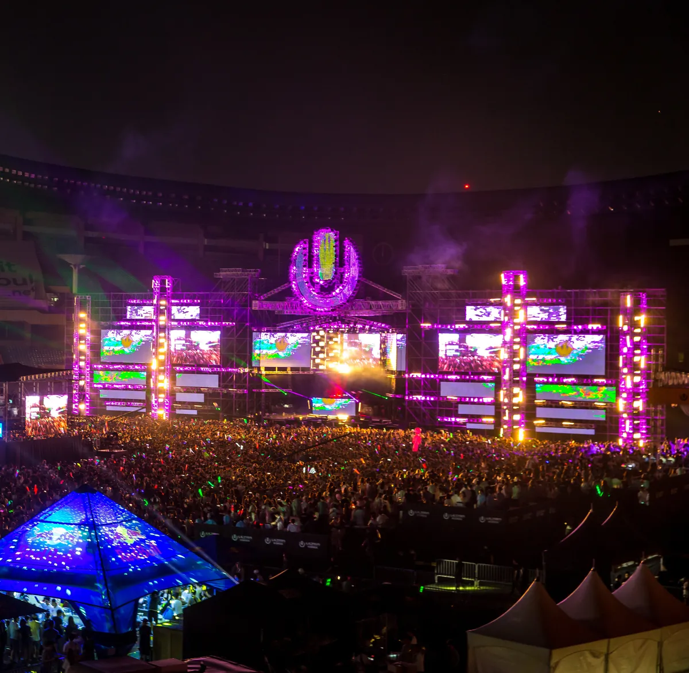

Festival guide, 2027
The best electronic music festivals in Asia, 2027
Ultra Japan, Wonderfruit, S2O Songkran, Sunburn, DWP, Ultra Korea and Zamna: where they are, what they play, and which 2027 dates are confirmed.
A list meant for choosing.
Asia has a lot of music festivals, and most of what is written about them lists the biggest names with a photograph each. This page covers the electronic ones and tries to answer what you need before you book: where each festival is, what it plays, what a ticket costs where a price was published, and which dates are confirmed for 2027.
For comparison with other regions, see the Europe festivals guide and the US EDM festivals guide.
How this list was chosen.
A festival is on this list when both conditions are met:
- Electronic music is the core of the programme, not one stage among pop and rock.
- It has an edition in 2026 or 2027 that its own site or named press confirms, or its latest edition is on its official site.
Order follows how much people search for each festival. The exclusions are explained near the end. Prices are quoted in the local currency of the source, and figures that came from press rather than the festival are labelled as such.
The festivals at a glance.
The table is the short version, and the sections below give the detail. "Not announced" means the festival's own site showed no 2027 date on 4 October 2026.
| Festival | Where | Latest or next edition | 2027 | Sound |
|---|---|---|---|---|
| Ultra Japan | Tokyo | 19 and 20 September 2026 (held) | 18 and 19 September 2027 | EDM, house, techno |
| Wonderfruit | Chonburi, Thailand | 3 to 7 December 2026 | Not announced | House, techno, live acts, art |
| S2O Songkran | Bangkok | 11 to 13 April 2026 (held) | Not announced | Big-room EDM, water |
| Sunburn | Mumbai | 18 and 19 December 2026 | Not announced | Mainstream EDM |
| Djakarta Warehouse Project | Jakarta | 11 to 13 December 2026 | Not announced | EDM, house, techno |
| Ultra Korea | Seoul | 20 September 2025 (latest listed) | None listed | EDM |
| Zamna Thailand | Phuket | 21 February 2026 (Koh Samui, held) | January 2027 (organiser's dates conflict) | House, techno |
Ultra Japan, Tokyo
Ultra Japan is the Tokyo edition of the Ultra festival, held at the Odaiba Ultra Park in Aomi, in Tokyo's Koto ward. The 2026 edition ran on 19 and 20 September, with gates at 10:00, music from 11:00 and a finish at 21:00, according to the official site. The first line-up announced for it named Peggy Gou, Alesso, Zedd b2b Knock2, The Martinez Brothers, Yousuke Yukimatsu, Worship and Sara Landry, across three stages: the Ultra Main Stage, Resistance and the Ultra Park Stage, as reported by Popii Land.
Ultra Japan 2027 is on 18 and 19 September 2027. Its official ticket page lists 2027 two-day tickets at ¥27,000 for GA, ¥15,000 for U-23 and ¥43,000 for PGA at the displayed tiers. These tiers may sell out; check the official ticket page before buying. No 2027 line-up was shown when checked on 5 October 2026.
The sources I read describe a daytime event from 11:00 to 21:00 and mention no camping, so plan on a hotel in Tokyo. The Ultra Music Festival guide covers the Miami original.
Wonderfruit, Thailand
Wonderfruit is the odd one on this list, and the festival's own site says why: it describes itself as built around "Mind, Nature and Sound", with music, cinema and cultural programmes together. It is held at The Fields at Siam Country Club in Chonburi, Thailand, and the 2026 edition is on 3 to 7 December. The festival's own page calls it "A Decade of Wonder", under the heading "Our 10-year journey".

The first wave of 2026 artists, reported by LIKDO, included Tangerine Dream, Nubya Garcia and Faustus among the live acts, Jane Fitz, Nicolas Lutz and Sweely at The Quarry, and Gerd Janson at the Forbidden Fruit stage. The official site lists Ban Bardo, Wonderness, The Quarry and Molam World among its venues.
Staying on site is part of the plan. The official lodging options are Boutique Camping, General Camping, Slow Wonder Cabins and off-site hotels, and passes are sold through TicketMelon. Wonderfruit 2027 dates were not announced on 4 October 2026.
S2O Songkran, Bangkok
S2O Songkran Music Festival is a water-fight festival held in Bangkok during Songkran, the Thai new year in April. Its own site describes it as held every April, with water cannons, global DJs and three days of music. The 2025 edition was its tenth anniversary, according to EDM Addicts.
The 2026 edition ran from 11 to 13 April at S2O Land on Ratchada Road, beside the Thailand Cultural Centre MRT station, according to the Eventpop ticket page. The organiser is S2O Factory, the age limit is 20 with ID or passport, and tickets cannot be refunded or exchanged. A Go2Thailand recap listed Zedd, Kygo, Alan Walker and Don Diablo among the acts and tickets from 1,700 baht, a price that rose as tiers sold out.

Expect to get wet all day. The recap advises quick-dry clothes, waterproof shoes and a waterproof phone case. S2O Songkran 2027 had no dates on the official site on 4 October 2026. Third-party listings already show dates, but none of them cites the festival, so they are not repeated here. The official site also says the brand has run editions in Australia, Japan, Taiwan, Korea, Hong Kong and New York.
Sunburn Festival, Mumbai
Sunburn began in 2007, according to its own announcement, and Esquire India says it started out in Goa. The 19th edition, in 2026, is not in Goa: the official announcement moves it to the Mahalaxmi Racecourse in Mumbai, in a two-day format on 18 and 19 December, with a closing party at the NSCI Dome on 20 December. Anyone searching for Sunburn Goa will find a festival that has left.

Esquire India reported tickets at ₹3,500 for a single day and ₹7,000 for two days, and named DJ Snake, The Chainsmokers and Sebastian Ingrosso as headliners. The festival's own page gives no prices and lists tickets as sold through BookMyShow. Esquire says the Mumbai edition was held at Infinity Bay in Sewri before the racecourse. Sunburn 2027 had not been announced on 4 October 2026.
Djakarta Warehouse Project, Jakarta
Djakarta Warehouse Project, or DWP, is a three-day festival in Indonesia. EDMTunes traces its roots to 2008, when it launched as Blowfish Warehouse Project. The 2025 edition was held at the GWK Cultural Park in Bali and drew about 70,000 people, with Calvin Harris, Skrillex, Charlotte de Witte and FISHER headlining, according to EDMTunes.

DWP 2026 returns to Jakarta, at JIExpo Kemayoran, on 11 to 13 December. The first names announced were Axwell b2b Sebastian Ingrosso, Afrojack, Alok, Dimitri Vegas, R3HAB, Cosmic Gate, Lilly Palmer and Eli & Fur. Three-day general admission started at 1.9 million rupiah on the official site, with early entry from 1.7 million and VIP from 3.9 million. EDMTunes adds that DWP rose nine places to No. 64 in DJ Mag's Top 100 Festivals 2026. DWP 2027 was not announced on 4 October 2026.
Ultra Korea, Seoul
Ultra Korea is the Seoul edition of Ultra. Its official site lists 20 September 2025 at the Oil Tank Culture Park in Seoul as its latest edition, with all three ticket phases sold out and door tickets priced at 160,000 won. It lists no 2026 or 2027 edition, so this page cannot give a date, and it is kept here because people still search for it and its status is not obvious.

The after-parties are the part you can hear. Three sets from the 2018 afterparty at Hyundai Motor Studio were filmed by MIXMIX TV.
Zamna Thailand
Zamna is a festival brand that began in Tulum, Mexico, in 2017, and it came to Thailand in 2026. Zamna On The Beach Thailand was held on 21 February 2026 at Club Seen on Koh Samui, from 14:00, for ages 18 and over, according to the festival's event page, with early bird general admission at 1,177 baht.
Zamna Phuket is listed for January 2027, but the organiser's event page conflicts: its date field says 29 January, while its description says 23 and 24 January. The page lists Yeden Gardens in Phang Nga, entry from age 20 and tickets through Ticketmelon. Verify the dates on the ticketing page before booking travel. No line-up was shown when checked on 5 October 2026.
EDM festivals in Thailand, Japan and India
EDM festivals in Thailand
Thailand has more of the festivals on this page than any other country: Wonderfruit, S2O and Zamna. Two more are worth knowing. 808 Festival in Bangkok, which calls itself Thailand's number one EDM festival, was scheduled for 2 and 3 October 2026, and ranked 29th in DJ Mag's Top 100 Festivals 2025, according to EDM Addicts. Tomorrowland Thailand is scheduled for 11 to 13 December 2026 at Wisdom Valley near Pattaya, with six stages, and Go2Thailand reports that all 150,000 tickets sold out in under an hour.
EDM festivals in Japan
Ultra Japan has announced its 2027 dates: Tokyo on 18 and 19 September. S2O also lists Japan among the countries where it has held an edition.
EDM festivals in India
Sunburn is a major EDM festival in India, now in Mumbai.
Not on this list, and why.
- Ultra Singapore. The official site lists 8 and 9 June 2019 at the Sands Expo and Convention Centre as its most recent edition and shows no upcoming date.
Asian electronic music festivals FAQ.
What are the best electronic music festivals in Asia?
Ultra Japan in Tokyo, Wonderfruit in Thailand, S2O Songkran in Bangkok, Sunburn in Mumbai, Djakarta Warehouse Project in Jakarta, Zamna in Phuket and Ultra Korea in Seoul, which has no date after 20 September 2025. See the table above.
Which Asian festivals have 2027 dates?
Ultra Japan is confirmed for 18 and 19 September 2027 on its official site. Zamna Phuket is listed for January 2027, but its organiser's date field and description disagree on the days. Wonderfruit, S2O, Sunburn, DWP and Ultra Korea had no 2027 dates on their official sites when checked on 4 October 2026.
What are the best music festivals in Thailand?
Wonderfruit for art, house and techno, S2O Songkran for a water party in Bangkok, Zamna in Phuket, 808 Festival in Bangkok for EDM and Tomorrowland Thailand, which sold out for December 2026.
What are the best music festivals in Japan?
On this page, Ultra Japan in Tokyo. Its 2027 edition is on 18 and 19 September.
What are the best music festivals in India?
On this page, Sunburn, held in Mumbai on 18 and 19 December 2026.
Is Sunburn still in Goa?
No. The 2026 edition is at the Mahalaxmi Racecourse in Mumbai, according to the official announcement.
Sources.
- Official sites, read on 4 October 2026: Ultra Japan, Wonderfruit, S2O, Sunburn, DWP, Ultra Korea, Ultra Singapore, Zamna On The Beach Thailand.
- 2027 tickets and dates, checked on 5 October 2026: Ultra Japan official tickets and Zamna Phuket official event page.
- Ultra Japan 2026 line-up and ticket prices: Popii Land.
- Wonderfruit first wave of artists: LIKDO.
- S2O 2026: Eventpop ticket page, EDM Addicts and Go2Thailand recap.
- Sunburn 2026: the official announcement and Esquire India.
- DWP history, 2025 attendance and 2026 names: EDMTunes.
- Zamna Phuket 2027: iFLYER and EDM Addicts.
- Thailand: 808 Festival, EDM Addicts and Tomorrowland Thailand, Go2Thailand.
Continue reading
Read next.
 Digging~14 min read
Digging~14 min readBest Boiler Room Sets of All Time, Ranked and Measured
Eighteen sets picked for what happens in them, beside the ten most-watched, counted across 8,206 Boiler Room recordings.
Read article → Rave spots~6 min read
Rave spots~6 min readBest Clubs in Bristol: Motion, Lakota and Thekla
Motion lost its lease in 2025 and moved, Lakota has run drum and bass since the 1990s, and a 1959 cargo ship still hosts club nights: the best clubs in Bristol.
Read article → Festivals~9 min read
Festivals~9 min readTomorrowland Festival: Where It Is, How Big, and the Music
A park in Boom, Belgium, that most of the world knows through a livestream: where Tomorrowland happens, how big it is, who owns it, and what plays off the Mainstage.
Read article → Festivals~11 min read
Festivals~11 min readEDC Las Vegas: What It Is, How Big, and the Music
Electric Daisy Carnival at the Las Vegas Motor Speedway: where EDC happens, how half a million people a year grew out of a field in Chino, and what plays past kineticFIELD.
Read article →